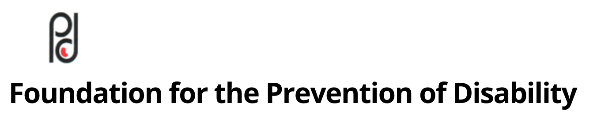

Spastics Society Of Karnataka
The Spastics Society of Karnataka is a Non-Government Organisation (NGO) dedicated to the welfare of persons with Neuro-Muscular and Developmental Disabilities. The Society provides a Comprehensive Package of Diagnostic and Intervention Services to persons with Cerebral Palsy, Autism, Mental Retardation, Multiple Disabilities and Learning Disabilities.
Spastics Society of Karnataka (SSK) started off as a branch of the Spastics Society of India in the year 1982, and went on to become autonomous in the year 1994. SSK is located on a 5 acre campus, donated by the Government of Karnataka, in Indiranagar, in the garden city of Bangalore.The Spastics Society of Karnataka welcomes donations in cash/cheque or kind. All donations to the Spastics Society of Karnataka are exempt under section 80G of the Income Tax Act of the Government of India.
Our sister organization includes Foundation For Prevention Of Disability
